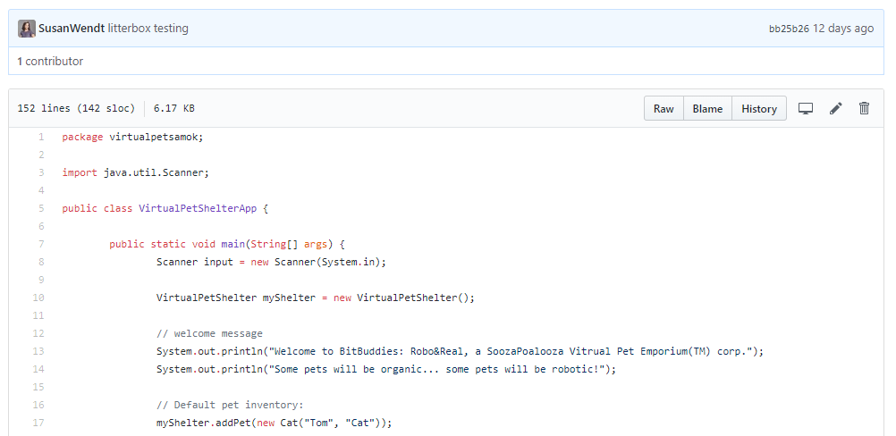

Front End
I can build websites that look like this.
Back End
I can also program and write software code.
About Me
I am scheduled to complete a full-stack Software Development Apprenticeship at We Can Code IT this April 2018. In this accelerated coding boot camp, I am learning the foundations of Object Oriented Programming and Test Driven Development within an Agile team environment. The primary languages I focus on are Java, SQL, HTML5, CSS3, and JavaScript.
Previously, I graduated Magna Cum Laude from Ohio State University with a Bachelors of Arts in Communications major and Spanish minor.
After graduation I worked for two non profits in the Human Resources and Corporate Relation departments.That expereince led me to become a Technical Recruiter which inspired me to make the career change, choosing to become a Software Developer.
When I am not honing my coding skills in the Information Technology industry, I enjoy being outside with my dog or riding my bike.
A personal accomplishment that I am incredibly proud of is that I am a 200hr Yoga Techer. I completed this training at Yoga on High in Columbus, OH in the Summer of 2017. Since then, I have taught weekly yoga sessions at a Columbus Park and Rec Center to adult beginners and, my favorite class to teach, a kids yoga. Additionally, I work at power yoga studio, Core Power Yoga.
My dog, Pip, is my world. The most pressing pursuit on //TODO list is to build him the instagram that he deserves!
Projects
Below you will see previews and descriptoin of a few projects that I have worked on while learning to code at We Can Code IT.
Technical Inventory
Java Language Fundamentals:
- variables • data types • loops • boolean and conditional statements • exception handling • collections framework • I/O
Object Oriented Programming:
- Java • classes and objects • abstraction • polymorphism • inheritance • encapsulation
Web Application Development:
- HTML5 • CSS3 • JavaScript • jQuery • Spring Web MVC • Sublime
Database Programming:
- Structured Query Language (SQL)
Tools/Environment:
- Git • Eclipse • Agile • Test Driven Development (TDD) • Unit Testing (JUnit)
Examples
Virtual Pets Amok:
There are organic pets and robotic pets. All dogs can be walked at once and each has a cages. Cats share an area and use a common litter box. All pets have a health attribute. Organic pets have their health decreased by unclean circumstances, and by thirst or hunger growing too high. Robotic pets only lose health if they’re not oiled regularly. All pets lose health if their happiness drops too low.
Contact
 email
email LinkedIn
LinkedIn Github
Github